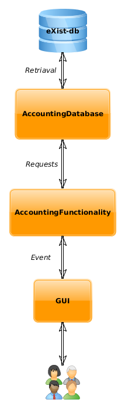

Student are to design and develop Java application for recording income and spending of small business owner, that stores data in fitting format within native XML database. To this end, students are to design structure of XML data and describe it using XML schema.
Functionality is to be capable of:
Every store income will include the following information:
We were assigned to design and develop Java application for recording incomes and expanditures for small business owner, that stores data in native XML database.
Every record contains:
Applications functionality:
Head of the project : Mgr. Ludìk Bártek, Ph.D
Team members:
We have decided on splitting the application into three independent layers, with upper layers using the services of the layer directly below it.
Going from bottom up, the layers are:
Database as the first layer handles all communication with native XML database and handles any
data retrieval of storage.
Second layer, Functionality, processes data and provides required application functionality.
Third layer is GUI, which providesinterface for interaction with the user.
Uses eXist-db as it's native XML database. Provides interface for storing new invoices into the
database as well as handling consistency of the database. For the purposes of the project it only
allows retrieval ability.
For more information on database -> Database
Handles application functionality, such as storing new invoices, calculating earnings and losses
and exporting data into PDF format. This layer is responsible for checking all input data for
validity before being inserted ino the database.
For more information on functionality -> Functionality
Provides user interface using JavaFX. Also provides hints for user as to a format of input data as well
as validation of the data using Functionality layer's functions.
For more information on GUI -> GUI
This application was programmed in Java with markup language XML to store application data as xml documents. For GUI we used library Swing. Whole graphical interface is created with .form file which is specific to IntelliJ IDEA and as such is necessary to build the project successfully. We have decided to use eXist-db because it is opensource xml database supporting XSLT and XQuery. Another important factor was high quality documentation.
This graph represents how are we working with every request. The request starts from user who is using our GUI. Next our GUI creates a request into functionality layer TODO
Team members: